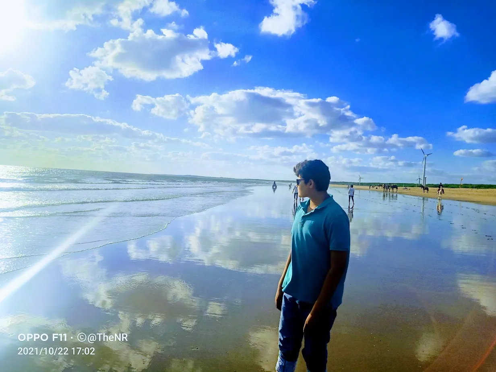

Complete Guide to Mandvi: Beach, Palace & Shipyards
Mandvi is where Kutch meets the Arabian Sea. From the majestic Vijay Vilas Palace to the 400-year-old shipbuilding tradition, here's your complete guide to exploring this coastal gem...
Read Full Story →